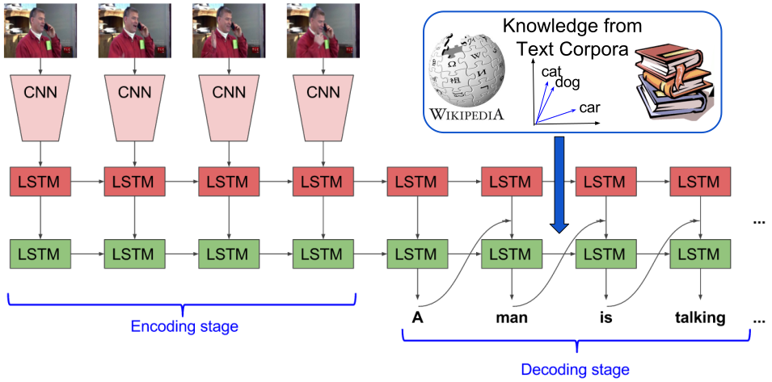

Abstract
This paper investigates how linguistic knowledge mined from large text corpora can aid the generation of natural language descriptions of videos. Specifically, we integrate both a neural language model and distributional semantics trained on large text corpora into a recent LSTM-based architecture for video description. We evaluate our approach on a collection of Youtube videos as well as two large movie description datasets showing significant improvements in grammaticality while modestly improving descriptive quality.
PDF
Poster
Overview
Our goal is to integrate external linguistic knowledge
into existing CNN-RNN based video captioning models.

We propose techniques to incorporate distributed word
embeddings, and monolingual language models trained on large
external corpora of text to improve grammar and descriptive quality of
the captioning model.
Late fusion and deep fusion techniques to integrate a language model
into the S2VT video description network.
Examples
Sample clips from Youtube with model output.
Movie Description Examples (Cherries).
Movie Description Examples (Lemons i.e. Model makes errors).
Code
The code to prepare data and train the model can be found in:
https://github.com/vsubhashini/caffe/tree/recurrent/examples/language_fusion
Download pre-trained model: InDomain_DeepFusion_Model
(741MB)
Vocabulary:
language_fusion_vocabulary
Evaluation Code:
https://github.com/vsubhashini/caption-eval
Notes:
- Caffe Compatibility
-
The network is currently supported by the
recurrent branch of the
Caffe fork
in my
repository or Jeff's
repository
but are not yet
compatible with the master branch of
Caffe.
Datasets
The datasets used in the paper are available at these links:
Microsoft Video Description Dataset (Youtube videos):
Project
Page - http://www.cs.utexas.edu/users/ml/clamp/videoDescription/
[Raw Data Download
Link]
[PROCESSED_DATA]
MPII Movie Description (MPII-MD) Dataset:
http://www.mpi-inf.mpg.de/movie-description
Montreal Video Annotation Description (M-VAD) Dataset:
http://www.mila.umontreal.ca/Home/public-datasets/montreal-video-annotation-dataset
Reference
If you find this useful in your work please consider citing:
@inproceedings{venugopalan16emnlp,
title = {Improving LSTM-based Video Description with Linguistic Knowledge Mined from Text},
author={Venugopalan, Subhashini and Hendricks, Lisa Anne and Mooney, Raymond and Saenko, Kate},
booktitle = {Conference on Empirical Methods in Natural Language Processing (EMNLP)},
year = {2016}
}